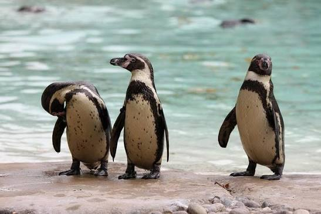
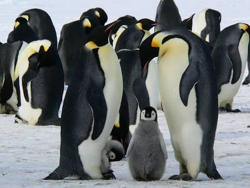
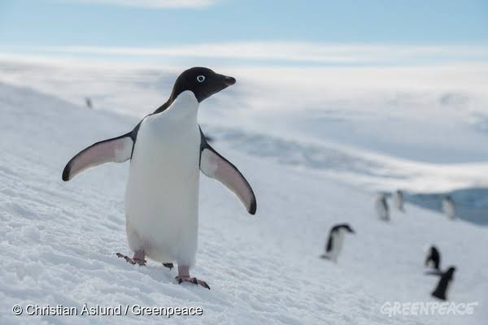
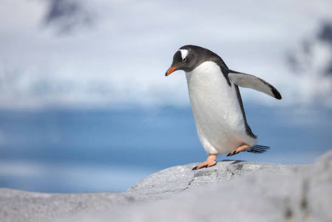
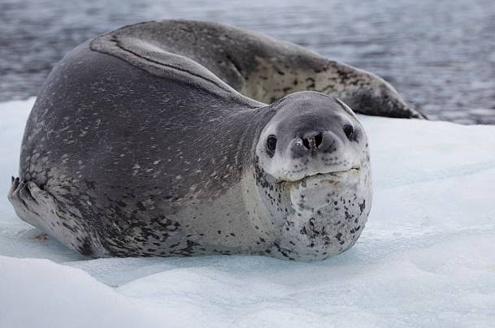
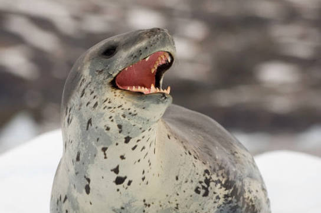
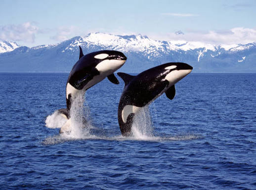
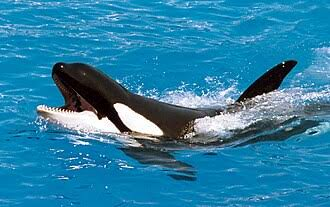

Pinguins conseguem voar como a maioria dos pássaros?

Falso! Pinguins não voam, mas são excelentes nadadores.

Pinguins conseguem voar como a maioria dos pássaros?

Falso! Pinguins não voam, mas são excelentes nadadores.

Pinguins vivem apenas no Polo Norte?

Falso! Todos os pinguins vivem no Hemisfério Sul (Polo Sul e regiões próximas).

É uma das predadoras mais formidáveis e temidas dos oceanos gelados da Antártida

Verdadeiro! A foca-leopardo é uma das predadoras.

também conhecida popularmente como "baleia-assassina", é o maior membro da família dos golfinhos oceânicos e um dos principais predadores do topo da cadeia alimentar marinha.

Verdade! Ela é chamada de baleia-assassina, mas não há nenhum registro histórico de ataques fatais aos seres humanos(na natureza)